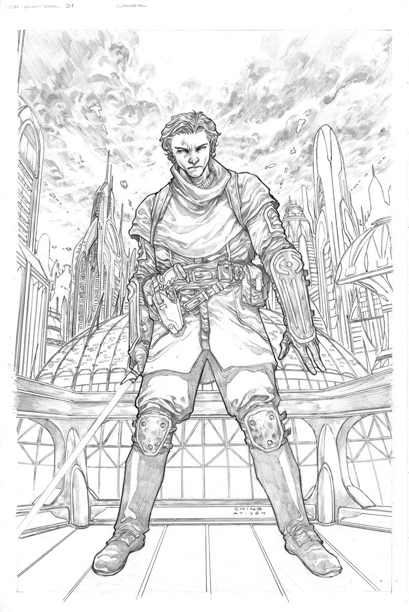
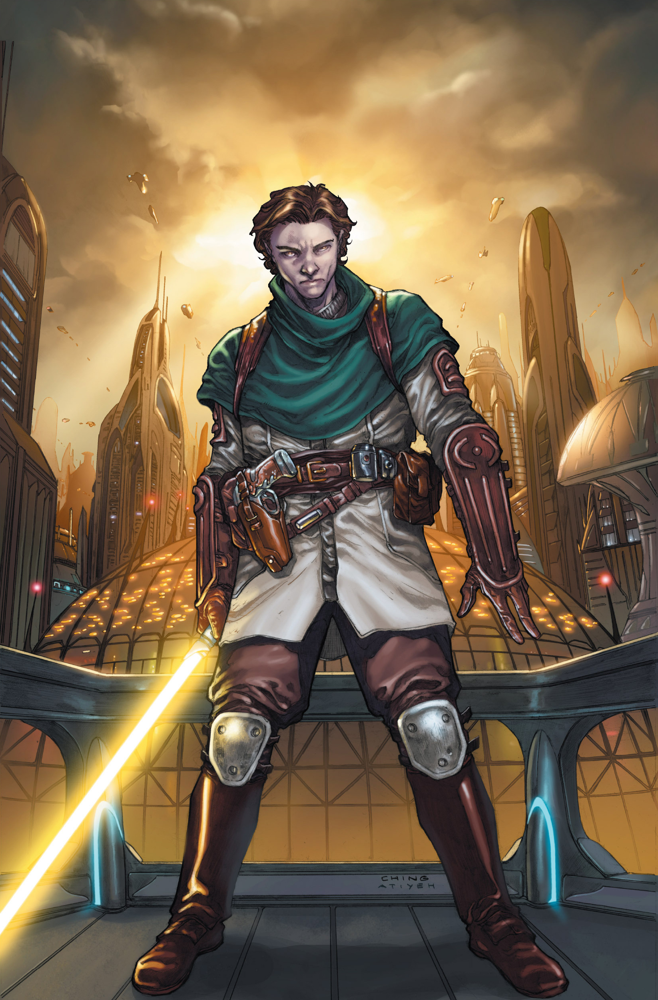

Ching's Kotor Art Part 1
"I live in Southern California where it's 90 degrees in the Summer and 70 degrees in the Winter and yet I still find ways to complain."
-Brian Ching
Home
About Me
Star Wars work:
Clone Wars
Kotor part:1
Kotor part:2
Forced Unleashed
Marvel work:
Hulk
DC work:
Supergirl
Ching's Work on Star Wars: Knights of the Old Republic for Dark Horse Comics Part 1

"Here's a cover I recently turned in for KOTOR #31. Nice to be drawing Zayne again!" ("THE ART OF BRIAN CHING," Ching)

We can see how the cover translates with amazing colors by frequent collaborator Michael Atiyeh.